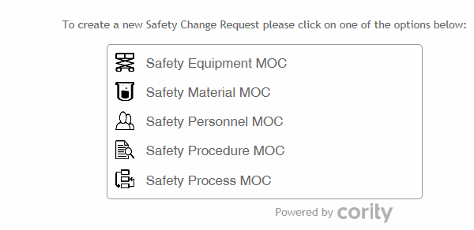

Alternatively, copy one or more existing requests as a starting point: choose Actions»Copy Request(s). On the new records, the Start Date will display today's date, the Request Status will display the first workflow step, and the GDDLOFB fields will be blank. Open and edit the copied records as required.
MoC layouts can be configured to auto-populate the GDDLOFB fields: the "Use Organizational Tree(s) from Employee Demographics" check box must be added to a custom layout. When the check box is selected, the GDDLOFB fields on the layout for the new record will auto-populate with the corresponding Demographics values of the employee in the Requested By field.
The Change Requests list can be filtered to show all requests of a particular type; to see a swimlane view of where each request is in the approval workflow, change the view to the MOC view (e.g. Material MOC). See Reviewing Change Requests.
Select the type of change you are requesting:

The available types are defined in the EnvironmentalManagementofChangeType (or QualityManagementofChangeType or SafetyManagementofChangeType) look-up table.
The Details screen that appears depends on which type of change request is chosen.
Enter details about the change request.
If applicable, select the specific Location and/or Organization affected by the change.
Identify any Cority module records related to the change (a Navigate to Source icon allows you to quickly open the related record).
Safety/Env: Any records added on the main form will be listed on the Related Records tab; if multiple records of a given type are related to this change request, add them directly on the Related Records tab.
The Approvals list is populated by according to the Approver look-up table, and takes into account the Location or Organization identified. If necessary, you can change any approver listed.
Quality: Identify any Related Product; the Current Product Version and Proposed Product Version sections display values from the selected product record.
The Approval Status tab displays any comments (and reason for rejection, if applicable) recorded by any approver (see Reviewing Change Requests).
The Related Records tab displays any related records identified on the main tab. To add additional records here, choose the appropriate item from the Actions menu.
On the Findings and Actions tab, record any findings and actions that prompted this change request. For information about recording a finding and its actions, see Recording a New Finding.
On the Questionnaires tab, associate questionnaires with a record. For information about creating and administering questionnaires, see Questionnaires.
Use the Documents tab to link an external file to the change request. For more information, see Linking or Importing a Document.
If you are not ready to begin the approval process, leave the Workflow Status as “Initiator Approval”. Click Save to save the information and come back to it later.
If you are ready to begin the approval process:
Safety/Env: Choose Actions»Submit. The Workflow Status displays the first approver in the approval sequence, and that user will be notified.
Quality: Change the Workflow Status to match the first approval role listed in the Approvals section, then click Save. The user in that role is notified.